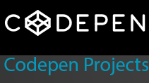
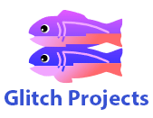
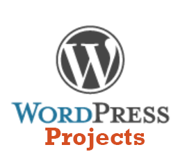

EditB's Portfolio
Welcome and thanks for visiting!
I'm EditB and here are some of my coding projects. Click on the ones you're interested in for more details. Enjoy your browse and have a lovely day!

- CodePen projects use client-side scripts, and are part of the Free Code Camp Front End Certificate program.
- They are built with HTML, CSS, jQuery AJAX and React.js.
- Some projects are games, some are apps utilising API info sent in JSON format.

- Glitch projects use both client and server-side scripts and are part of the Free Code Camp Back End Certificate Program
- They are built with HTML, CSS, Express.js, NodeJS, MongoDB and also have a project with Jade.
- The projects are microservices, returning information in JSON format based on user input. Examples are: Timestamp microservice, URL Shortener Microservice.

- WordPress is a widely-used, very popular CMS (Content Management System).
- It is based on PHP and MySQL.
- Very easy to set up and configure. And of course not only can you use the available plugins and themes but you can also develop your own.